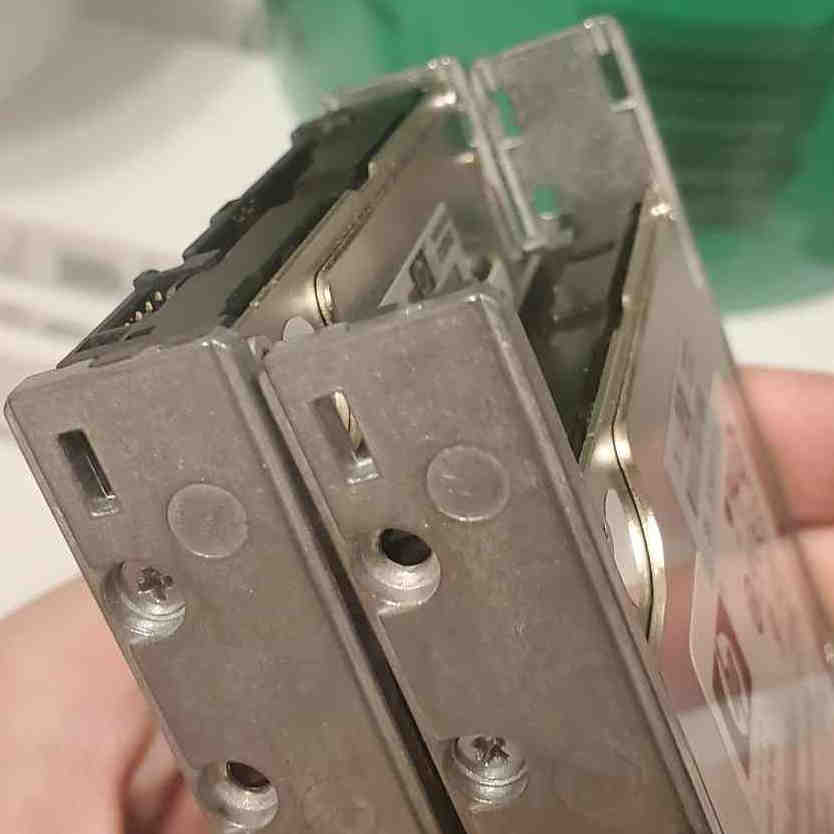

A while ago I had set my sights on the CCNP Enterprise certification. To do this, I would need supplement my reading with labs to help cement concepts further. In this blog I'm going to go over my thought process in deciding what to do, and then some of the technical issues I faced actually setting things up.
First task is to decide which network emulation program to use. There are a few decent options, and each has some pros and cons:
Packet Tracer is free simulation program provided by Cisco. It is extremely easy to download (simply register for the free tutorial course to access the download), extremely easy to run in your standard desktop operating system, and is extremely easy to start configuring devices. While this program is fantastic for studying for the CCNA certification, it is rather limited when you need to dive deeper into certain topics. Due to being a simulator, all IOS features are re-implemented. The developers prioritize things that are necessary for the CCNA, and often skip over more niche protocols and parameters. For these reasons, Packet Tracer has become a barrier for me and I'll need to move to one of the other options.
EVE-NG is an emulation software that has both free and paid plans. Generally the free plan appears to be sufficient for individual usage, however the paid plan is approximately $160usd/yr as of writing. One technical aspect that makes it different is that EVE-NG appears to function under some sort of clientless / nested virtualization architecture, which requires different setup to get certain vendor's images running. This is not relevant to my use case, but interesting enough to mention. Anecdotally, most people seem to suggest steering clear of EVE-NG in favor of GNS3 due to simplicity, so I did not give it too much thought.
GNS3 is an open source simulation/emulation software which can run in Type 1 virtualization, Type 2 virtualization, or bare metal. Being FOSS, it is 100% free for all features. It also appears to be the most common platform used by instructors who provide pre-made lab configurations as part of their courses. While you can convert labs manually between EVE-NG/GNS3/CML, having them automatically work is certainly convenient. These are interesting propositions and are what made GNS3 my #2 choice, however there was one major hurdle that only CML can trivially bypass.
CML is Cisco's proprietary equivalent to GNS3/EVE-NG. It is also able to run with Type 1 or 2 virtualization, as well as bare metal. The major downside is that there is no free option, and the basic subscription will cost you a moderate $200usd/yr as of writing. The major upside is that said subscription automatically comes with entitlement to the various Cisco device virtual firmware images. This is one of the major problems with using GNS3/EVE-NG. Unless you are working for a Cisco partner who already has access to download these images, there is no legal way to obtain them directly. Because of this, I chose to bite the bullet and buy a CML subscription in the end.
While for the purposes of the CCNP I do not need to emulate any other vendor's equipment, that is another limitation to be aware of. Packet Tracer can only simulate Cisco equipment, ever. EVE-NG/GNS3/CML can be setup with images and config files for other vendors, however some troubleshooting will be required. Only CML and PT automatically come with legal entitlement to emulate Cisco equipment.
Picking out hardware that can support CML is pretty simple in theory. Cisco publishes their minimum requirements online which are pretty easy: 8gb+ of RAM, 4+ CPU cores, and 32gb+ of HDD storage. It can be run either within desktop operating system using software such as VMWare Workstation or on a dedicated hypervisor server operating system such as VMWare ESXi.
When deciding between a workstation or server, the primary consideration is what else the hardware will be used for beyond CML. Those with beefy gaming/creative workstations already may be capable of simply running CML on their daily machine and calling it a day. Those without (or, those who want to let it run constantly) may find a server more useful. Setting up an entire server just to host a CML VM also has the benefit of allowing you to turn up other VMs using your spare resources for really any homelab purpose, which I why I opted for that route.
Another interesting option that I did not spend much time researching is using a VPS in the cloud. If you do not have hardware on-hand this could potentially save quite a lot of money, but at the cost of some of your time tweaking options and getting AWS/Azure/GCP to play nice with your nested virtualization. For EVE-NG, Google Cloud is even a documented installation option. If you are interested by this route, make sure to do your research on what will/won't work online.
Given that I do not have a server, I first need to spec one out for a reasonable price. My access to retired work servers is unfortunately limited, and there are no good e-waste shops within an hour of me so I chose to look online. Besides the obvious resources (such as Ebay or r/HomelabSales), one that I want to shoutout is labgopher.com which I found convenient for sifting through junk and finding a decent deal worth paying shipping.
I ended up with the following for about $150 USD:
Dell R620
2x Xeon E5-2630 v2, 2.6GHz 6-core
64gb RAM
4x HP 146gb SAS drives, free from my box of junk
Note: Installing hard drives is much easier when you use the right screw holes on your caddies and plug them in...: 
To prepare the server, the first thing I decided to do was update the various firmwares to the newest verions available to me. The BIOS driver can be done following these steps. My RAID controller was already on the newest version but could have been updated by going to the Dell driver page and searching for your specific controller model (e.g. PERC H710 Mini).
You may also need to dig around in BIOS at this point and do some preparations to support ESXi. I had to revert some virtualization changes the previous owner had setup, as well as configuring a storage volume for my 4 new disks.
After those are done, the next step is to find the proper download of ESXi. For Dell, they provide OEM-customized versions on their download page. Simply search for your server model, then filter by VMWare ESXi, and select the most recent version that is supported. Then create a boot USB drive using a tool like Rufus, plug it in to your server, and during boot select that device to begin the installation. Follow the on-screen steps as directed and give it some time to think.
With any luck, you'll eventually be presented with a black/yellow informational screen like so:

(Source: https://4sysops.com/archives/install-vmware-esxi-on-dell-poweredge/)
This means that you should be good to log in from another computer and access the GUI, and ESXi is running properly. If you can't connect from another computer, some things to double check would be what interface you're plugged in to, and that your PC and Server are both on the proper subnets. If using DHCP, you will want to create a reservation for whatever IP address your server pulls so it does not change on you later.
Note: Due to the physical layout of my apartment there was no easy way for me to run an ethernet cable from my desktop PC to the R620. I embarked on a slight sidequest to buy and configure my first MikroTik, a hAP lite which I used as a dedicated wireless client to connect to the server. More on that in a future blog post
After you are in ESXi, CML gets installed as a typical VM via a custom OVA file provided by Cisco. You can follow along their instructions here. The steps are as follows:
1. Download the OVA and ISO files from Cisco. If you haven't yet, this is when you need to purchase CML to gain access to these files.
2. Upload the files to ESXi. The refplat ISO simply needs to be accessible, the OVA will configure the CML VM with all necessary settings. Make sure to follow the Cisco documentation on all of the various recommended settings and flags so that your VM will run as smoothly as possible.
3. Start the VM. Access it from ESXi directly and follow the prompts to setup server information, user accounts, and networking.
4. Access the VM from it's IP address via HTTPS. If you need to access the admin page again, it is hosted on port 9090.
5. After done, you should see the CML homepage in your browser and be able to start creating topologies. Don't forget to also add your registration token so that you are compliant with licensing.
And you're done! Installing ESXi/CML is not too complicated, though some of these hurdles took me quite a bit more time than I'd like to admit to figure out on my own (such as plugging in the hard drives). Being able to create topologies without the limitations of Packet Tracer on a dedicated machine has been extremely helpful for me so far, and hopefully if you chose to follow along with what I did here these steps gave you some guidance on the process as well.